"Five Illusions Challenge Our Understanding of Visual Experience"
Vision Sciences Society (2025)
[Poster]
[Abstract]
"Five Illusions Challenge Our Understanding of Visual Experience"
Vision Sciences Society Demo Night (2025)
[Link]
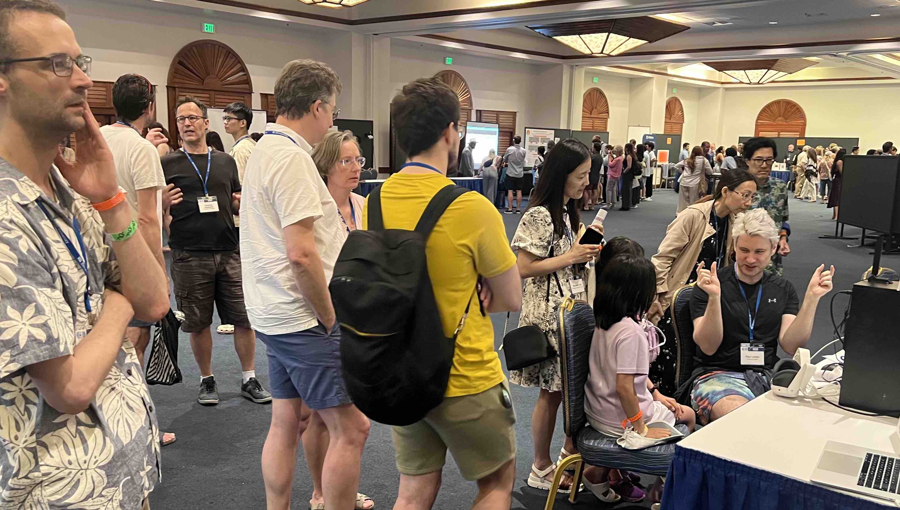
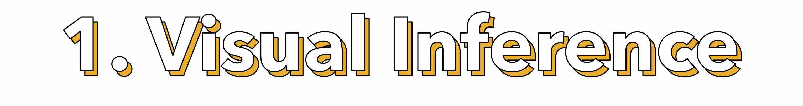
The Hollow Face Illusion is often appealed to as evidence that visual experience is the visual system's "inference" ("best guess") about what is out there in the world, since a hollow mask is percieved as inverted in depth.
However, in two illusions I question whether percieved depth is really inverted:
I show that if you add physical objects into the hollow of the Hollow Face Illusion - space that physically exists, but which is "impossible" according to the illusion - the illusion still persists (as evidenced by illusory motion), but you still see the true (non-inverted) depth ordering of the objects and mask in stereo depth.
Kriegeskorte Lab experiencing the Un-Hollow Face Illusion.
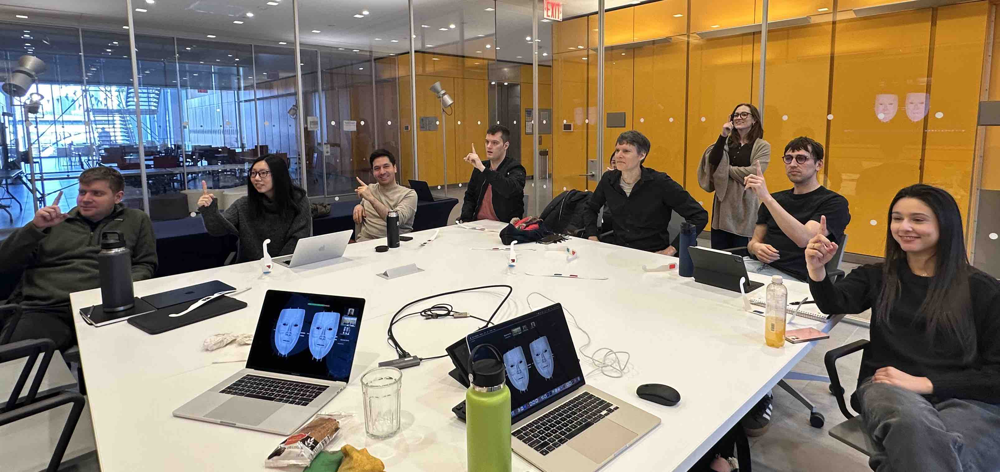
LINTON MORPHING FACE ILLUSION
I show that if you add balls to the tip of the nose and the cheek, and morph back and forth from a receding to a protruding mask, the change in the ordinal depth of the balls (inverting back and forth) is apparent.
The same physical distance produces different retinal disparities depending on whether it is near (blue) or far (red). This leads to the assumption that there is a mechanism ("depth constancy") that compensates for the change in disparities with viewing distance, so we see a roughly constant separation in depth.
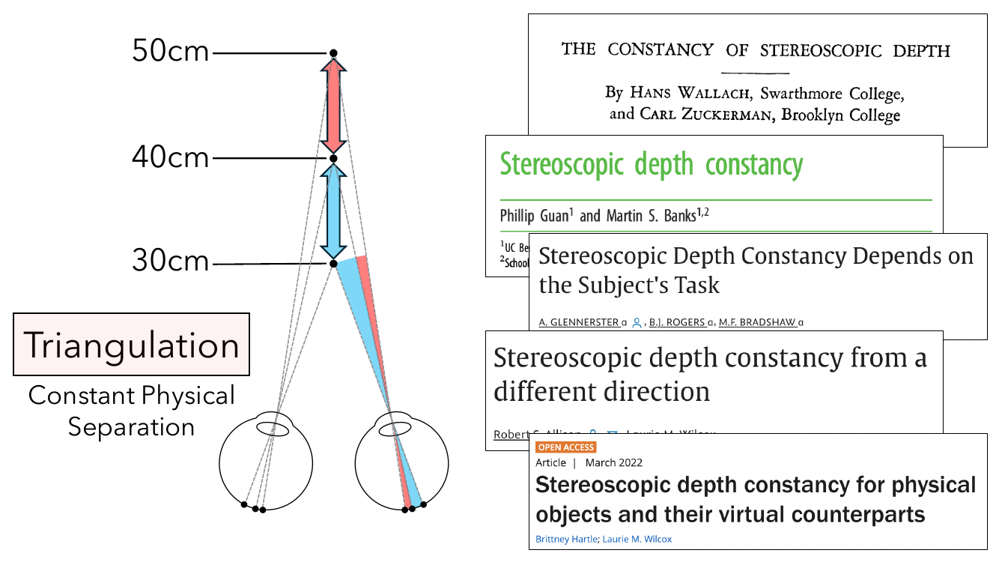
However, I argue there is no such "depth constancy" mechanism.
LINTON STEREO ILLUSION
The question is when do two circles (a large back cirlce and a small front circle) appear to move rigidly together in depth (when their angular size controlled)? When the physical separation between the circles is kept constant (left) or when the retinal disparities between the circles are kept constant (right):
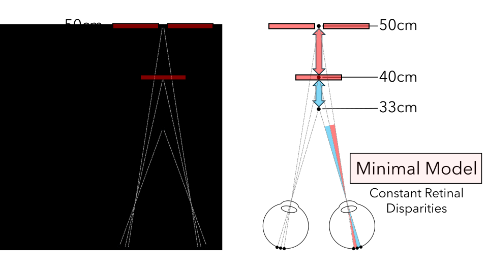
When we keep the physical distance between the circles constant, the circles don't look as if the separation between them is constant, but instead changes:
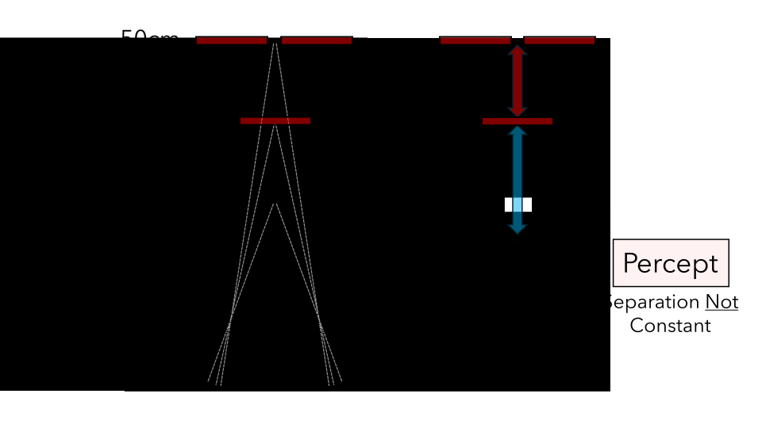
Whilst when we keep the disparities fixed, the circles appear to move rigidly together, even though the are actually physically compressing:
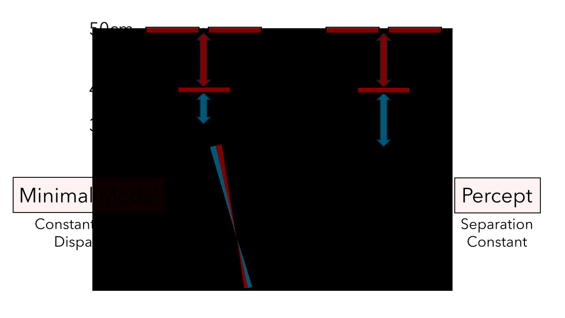
You can try the Linton Stereo Illusion for yourself with a pair of red-blue glasses:
With this version specifically optimized for red-blue glasses:
Originally presented at the Vision Sciences Society (VSS)(2024) Demo Night and European Conference on Visual Perception (ECVP)(2024) Demo Night.
Explains why previous accounts of the failures of depth constancy should predict the opposite distortions from the ones found in the Linton Stereo Illusion.
We know that increasing the separation between the eyes makes scenes seem miniature. Traditionally, this has been explained as due to "vergence" (eye rotation) making objects seems smaller and closer.
However, I argue that it instead rests on a purely cognitive association between accentuated stereo depth (from horizontal disparities) and closer distances given disparities fall off with distance squared:
I replicate the effect in VR (Condition 1), but show it disappears as soon as we control for changes in horizontal disparities (Condition 2).
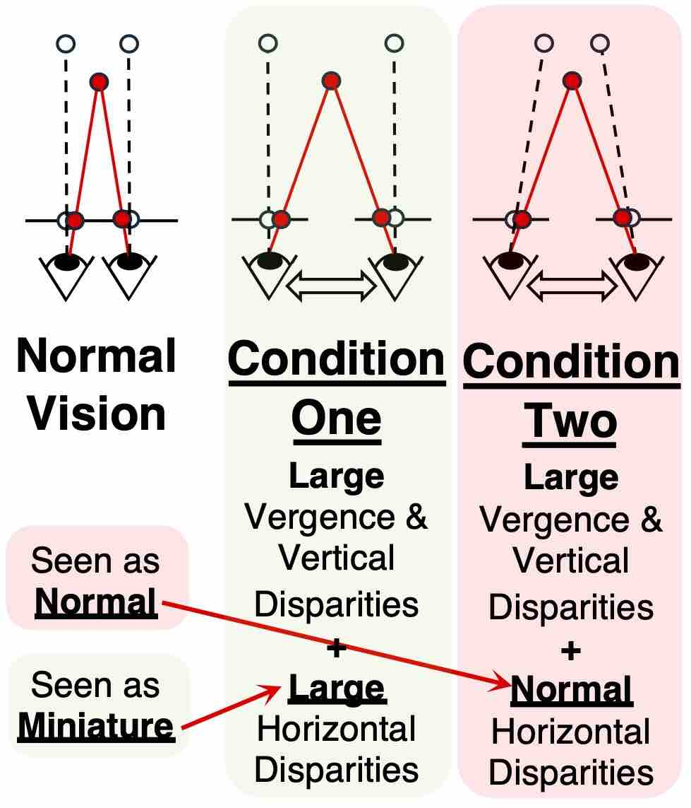
Switching between the two conditions we see a startling effect: the "scale" of the scene changes, even though all that has changed is the geometry of the scene, not the apparent distance of the scene itself.
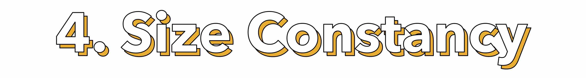
Size constancy is thought to change the percieved angular size of objects in images, for instance the apparent size of the cars in this image:
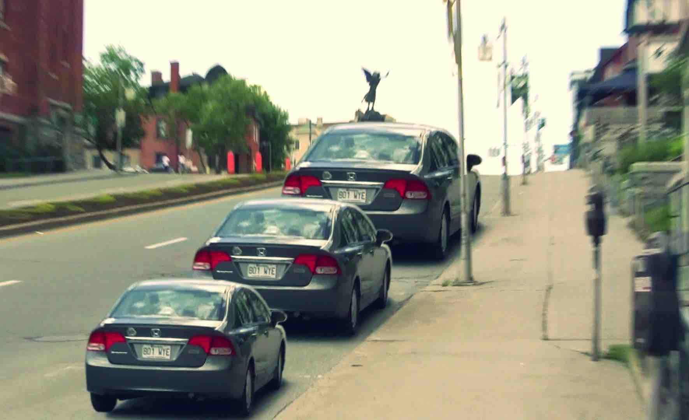
(c) Alex Blouin / Reddit
However, I argue that size constancy does not affect perceived angular size:
If we add frames to the cars, the cars appear more distorted than the frames, which is inconsistent with size constancy affecting perceived angular size.
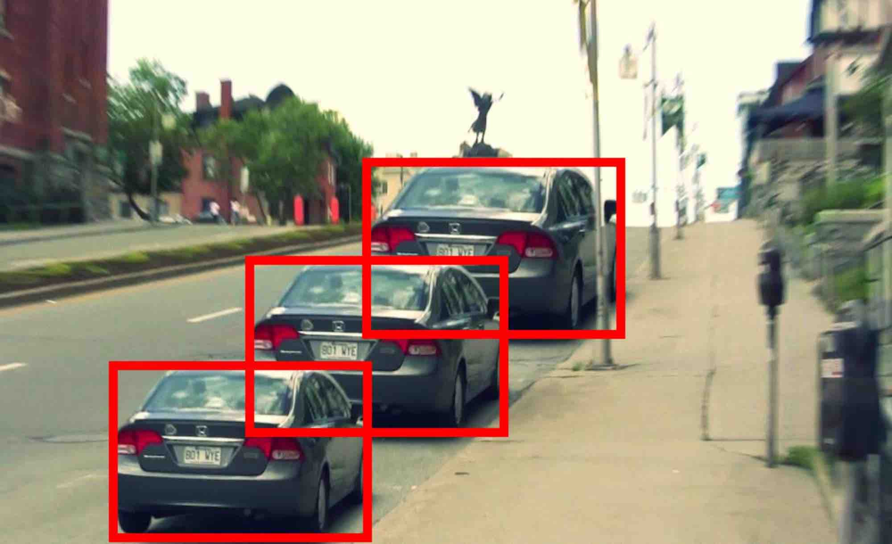
Color constancy is thought to affect the percieved color of objects, so that the disk in this illusion by Akiyoshi Kitaoka (based on Anderson & Winawer, 2005) is perceived differently as yellow or blue:
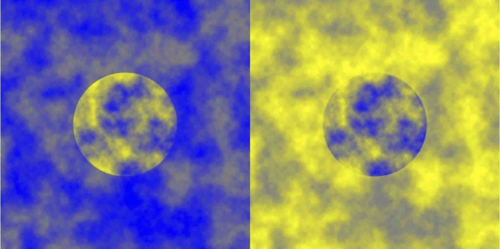
(c) Akiyoshi Kitaoka
However, I argue that color constancy does not affect perceptual appearance:
I show that if we switch back and forth between the two interpretations of the disks, our judgement of the disk's color ("yellow" or "blue") changes without the disk's perceptual appearance changing.